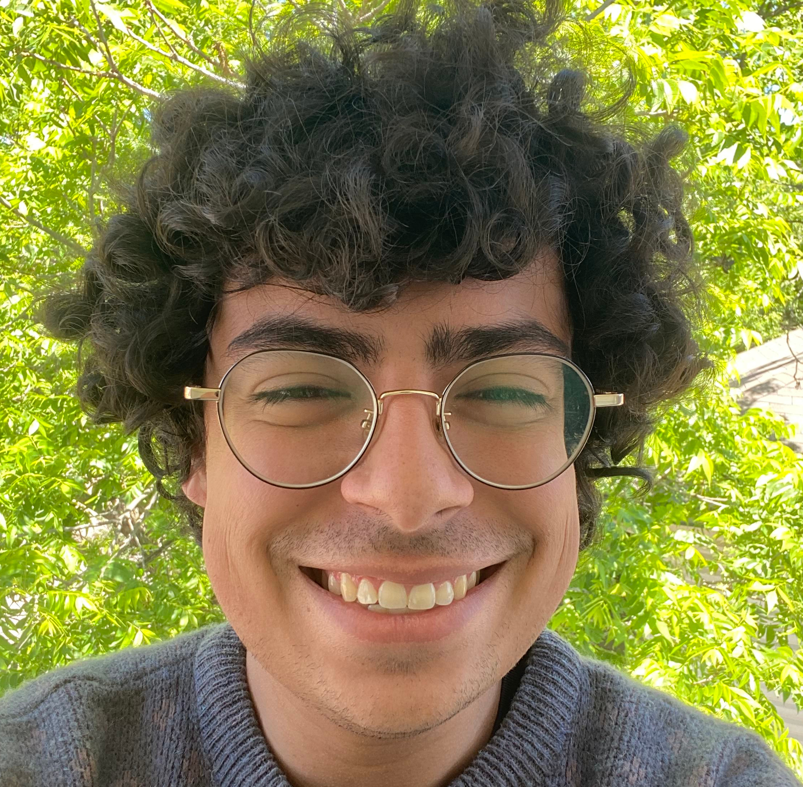

About Me
I am a fourth year math undergraduate at The University of Texas at Austin. Currently, my interests include functional analysis, modeling social insects interactions, and Voronoi cells in fluid dynamics.
I am the VP of Math Club, and a member of Association for Women in Math and the Mathematicians of Color Alliance. I also run an intro to computational mathematics reading group.
This Fall I will be taking Mobile Computing, Data Visualization, and Intensive Russian I.